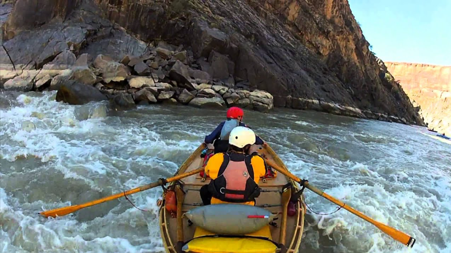
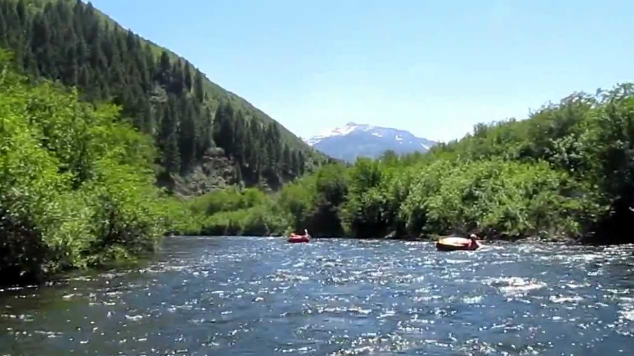
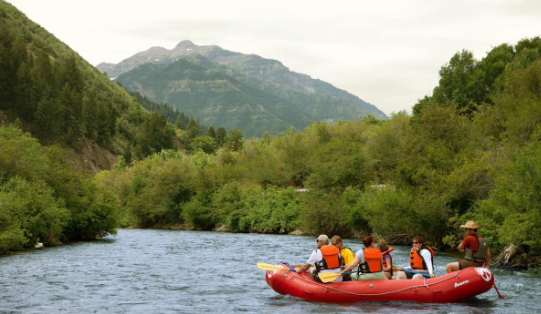

Contact Us!
For any general inquiries, reservation questions, or website suggestions, please contact us using the link at the top of the page or here.
Available Trips
| Name | Rapid Rating | Review Rating |
|---|---|---|
| Cataract Canyon | III-IV | 8.0/10 |
| Duchesne River | III-IV | 9.1/10 |
| Fisher Towers | III-IV | 8.5/10 |
| Green River | II-III | 8.3/10 |
| Price River | III | 8.5/10 |
| Provo River | I-II | 9.5/10 |
| Sevier River | III | 8.5/10 |
| Snake River | III-IV | 9.2/10 |
| Weber River | II | 9.3/10 |
| Westwater Canyon | III-IV | 9.8/10 |
Popular Trips
Westwater Canyon
Westwater Canyon has rapids ranging from III-IV. This is one of our more popular, challenging rapids. Great for those looking for a fun challenge, for those looking for a thrill!
Provo River
Provo River is a scenic ride through Provo. With views of the canyon, you can reconnect with nature. This river has class I-II rapids. This ride is great for families!
Weber River
Weber River is a gorgeous, calmer ride with a class II rapid rating. This river is great for getting canyon cred with a low chance of going overboard.